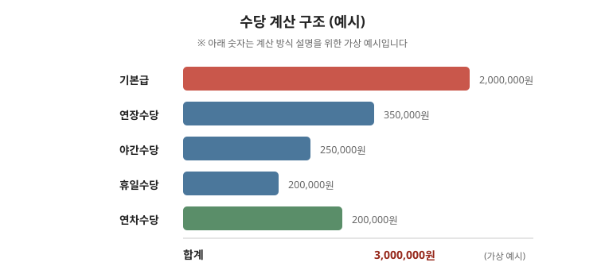

퇴직금은 재직 기간과 퇴직 직전 임금으로 정해집니다. 그래서 퇴직 직전 3개월의 급여 자료를 남겨 두는 것이 핵심입니다. 이 글은 누가 받는지부터 산정 구조·지급 기한·못 받았을 때 순서까지 정리한 안내입니다. 계속근로 인정과 평균임금 포함 범위는 사안마다 결론이 다르므로 마지막 점검표까지 읽고 평균임금 글·전문가 상담으로 확인하세요.

한눈에 보는 표
| 항목 | 기준 | 확인할 것 |
|---|---|---|
| 대상 | 계속근로 1년 이상 + 주 15시간 이상 | 수습·휴직·갱신 기간 포함 여부 |
| 산식 | 30일분 평균임금 × 계속근로연수 | 상여·연차수당 포함 여부 |
| 지급 | 퇴직 후 14일 이내 원칙 | 지연 시 지연이자, 합의 연장 여부 |
1. 누가 받나 — 계속근로가 관건
- 계속 근로 기간이 1년 이상이고 4주간 평균 주당 소정근로시간이 15시간 이상이면 퇴직급여 제도가 적용됩니다. 기간제·단시간도 요건을 채우면 대상입니다. “알바는 안 된다”는 말은 사실이 아닙니다.
- 수습 기간, 휴직 기간, 계약 갱신으로 이어진 기간이 계속 근로로 인정되는지가 다툼의 출발점입니다. 계약서가 바뀌었어도 실제 근로가 끊기지 않았다면 계속근로로 볼 여지가 큽니다.
- 입사일·계약서·갱신 내역을 시간순으로 정리해 두세요. 이 기록이 퇴직금 분쟁의 출발점입니다.
2. 얼마인가 — 평균임금 × 연수
- 계속근로 1년에 대해 30일분 이상의 평균임금을 지급하는 것이 기준입니다. 평균임금은 퇴직 전 3개월의 임금 총액을 그 기간의 일수로 나눈 값입니다. 상세 구조는 평균임금과 통상임금 글을 보세요.
- 상여금·연차수당·미지급 수당이 평균임금에 포함되는지에 따라 결과가 크게 달라집니다. 퇴직 직전 1년의 지급 내역을 빠뜨리지 말고 모으세요.
- 법정 기준보다 유리한 퇴직급여를 정한 단체협약·취업규칙이 있으면 그것이 적용됩니다. 자사 규정을 먼저 확인하세요.
3. 언제 받나 — 14일 원칙
- 퇴직 후 14일 이내에 지급하는 것이 원칙이고, 늦어지면 지연이자가 문제 됩니다. 지급 기한을 문서로 확인하고, 연장 합의가 있었다면 그 합의서 사본을 보관하세요.
- 퇴직금을 분할 지급하거나 중간정산하는 방식은 요건이 엄격합니다. 동의서·각서를 요구받으면 서명 전에 내용을 확인하고 상담을 받으세요.
- 퇴직연금(DB·DC)에 가입된 경우 지급 방식이 다릅니다. 관련 글 퇴직급여 종류 글에서 본인 유형을 확인하세요.
4. 받지 못했을 때 — 체불과 같은 순서
- 임금체불과 같은 절차로 진정·소송을 할 수 있습니다. 근로계약서·급여명세서·입금내역·출퇴근 기록을 모으세요. 관련 글 임금체불 대응·진정 방법 순서대로 진행하세요.
- 회사가 지급 능력이 없거나 도산한 경우 임금채권보장 제도(대지급금)를 검토합니다. 요건과 한도가 정해져 있으니 사업주 인적사항을 미리 확보해 두세요.
자주 틀리는 3가지
- “1년 못 채우면 0원” — 계속근로 판단은 계약서 날짜가 아니라 실제 근로 연속성으로 봅니다.
- “상여금은 제외” — 정기 상여 등은 평균임금에 포함될 수 있어 포함 여부가 금액을 바꿉니다.
- “중간정산 동의는 형식” — 중간정산은 요건이 엄격합니다. 동의 전 상담이 필요합니다.
현장 체크리스트
- □ 입사일·계약 갱신 내역을 시간순으로 정리했는가
- □ 퇴직 전 3개월~1년 급여명세서를 모았는가
- □ 취업규칙·단체협약의 퇴직급여 규정을 확인했는가
- □ 지급 기한(14일)을 문서로 확인했는가
- □ 중간정산·분할 요구가 있으면 상담 전에 서명하지 않았는가
자주 묻는 질문
- Q. 계약직 11개월인데 퇴직금이 없나요? — A. 갱신 반복으로 계속근로 1년을 넘기면 대상이 될 수 있습니다. 계약서 전부를 모아 확인하세요.
- Q. 주 15시간 미만이면 정말 없나요? — A. 법정 퇴직급여 대상에서 제외될 수 있습니다. 다만 소정시간 산정 방식을 따져봐야 합니다.
- Q. 퇴직금 대신 연봉에 포함됐다고 합니다. — A. 퇴직금 분할 약정은 엄격한 요건을 갖춰야 유효합니다. 약정서와 실제 지급 내역을 대조하세요.
- Q. 회사가 “다음 달에 준다”고 합니다. — A. 지급 기한 연장은 문서로 확정하고 지연이자를 함께 확인하세요.
근거와 원문
- 근로자퇴직급여 보장법 규정 — 국가법령정보센터에서 “퇴직급여” 검색
- 퇴직급여·대지급금 안내 — 고용노동부 누리집
- 관련 글: 평균임금과 통상임금 · 퇴직급여 종류 · 급여명세서 읽기
이 글은 2026-09-19 기준 일반 안내입니다. 평균임금·계속근로기간 판단은 사안마다 결론이 다르므로, 실제 청구 전에 노무사·변호사 검토를 받으세요. 법률 자문이 아닙니다.